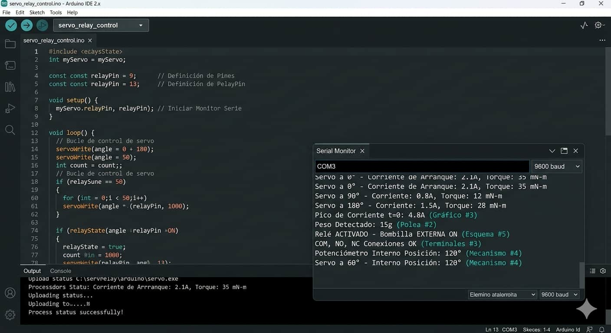
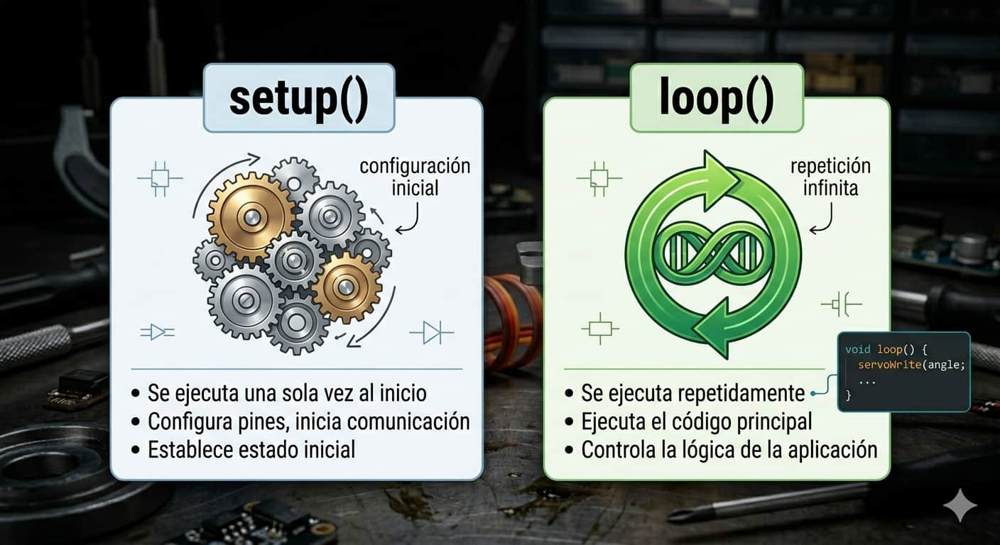
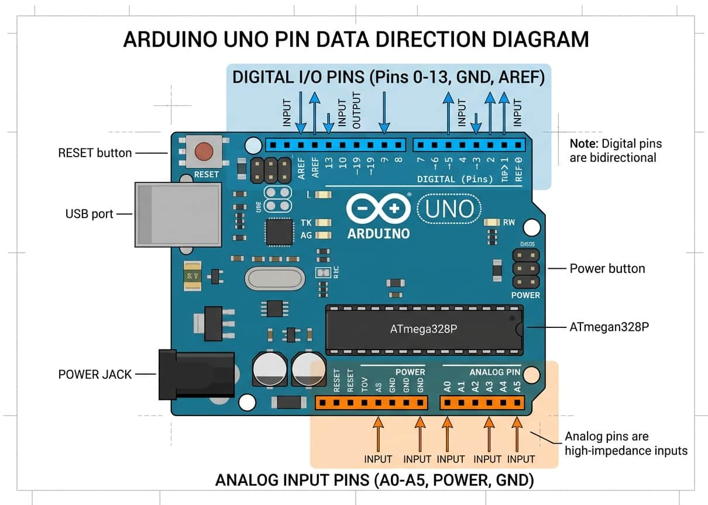
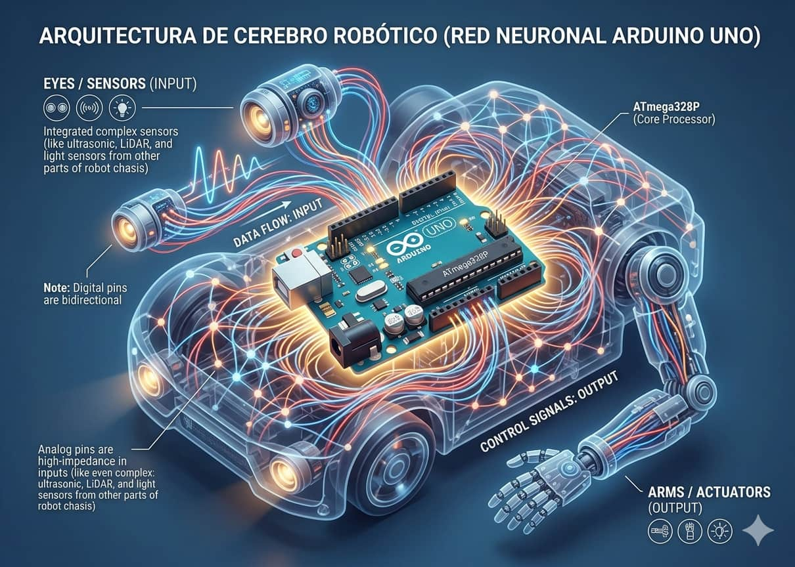
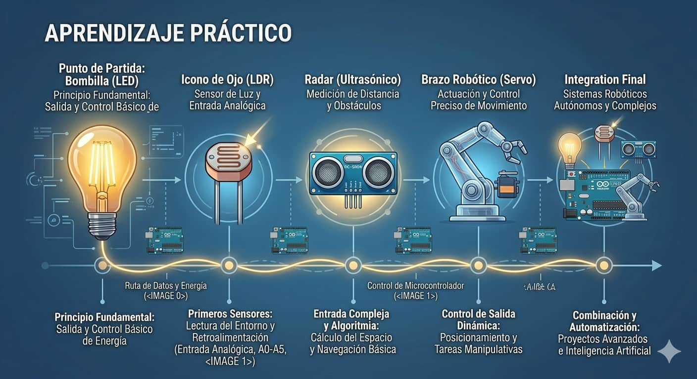

Arduino IDE

El entorno de desarrollo donde escribimos y cargamos nuestro código basado en C++ hacia la placa mediante un cable USB.

Arduino es una plataforma de desarrollo de código abierto diseñada para que cualquier persona pueda crear objetos interactivos sin necesidad de ser un experto profundo en ingeniería electrónica.

El entorno de desarrollo donde escribimos y cargamos nuestro código basado en C++ hacia la placa mediante un cable USB.

Todo programa se divide en dos funciones vitales: setup() para la configuración inicial y loop() para la ejecución cíclica.

Los pines de la placa funcionan como el sistema nervioso, recibiendo información de sensores o enviando energía a los actuadores.

En la arquitectura de cualquier proyecto, Arduino funciona como el "cerebro" central. Recibe los impulsos de los sensores (nervios sensoriales) y coordina la respuesta de los actuadores (músculos). Esta centralización permite que componentes físicos y programación se unan en un lenguaje coherente.
La importancia de esta plataforma reside en su versatilidad: puede leer datos, procesar información en milisegundos y ejecutar acciones complejas.

Para dominar la plataforma, estudia estos conceptos clave:
Consolida tus conocimientos mediante la práctica progresiva: